Monitores LED en Honduras: precios comparados
14 productos LED en 1 tiendas (Sycom). Desde L 2,395.
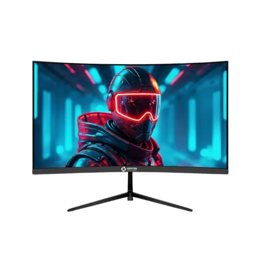
Monitor LED 27" Curvo Gamer Vorttek VK270CG · FHD 180Hz 1ms (1xDP/1xHDMI)L 4,995En Sycom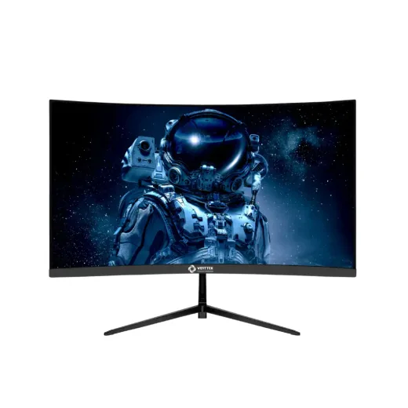
Monitor LED 23.8" Curvo Gamer Vorttek VK238CG · FHD 180Hz 1ms (HDMI/DP)L 3,795En Sycom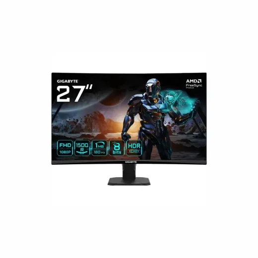
Monitor LED 27'' Curvo Gamer GIGABYTE GS27FC · FHD 180Hz 1ms (2xHDMI/DP)L 5,750En Sycom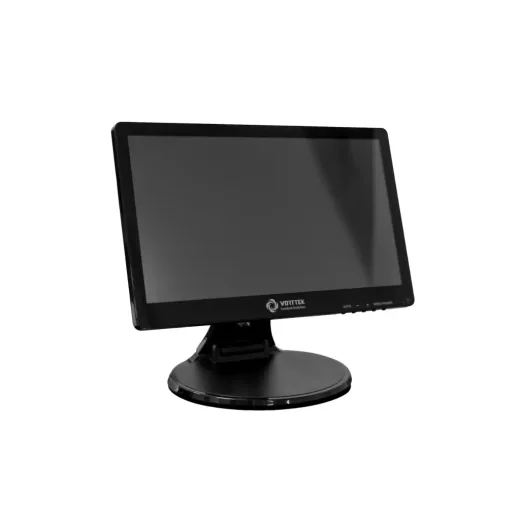
Monitor LED 15.6'' Touchscreen Vorttek Enduratouch 1920x1080 HDMI/USBL 5,995En Sycom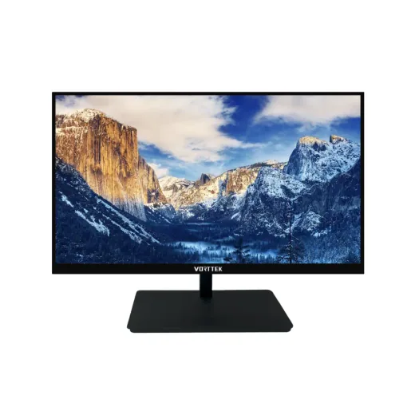
Monitor LED 27" Vorttek VK270F75 VGA/HDMI 75Hz 1920x1080 12MSL 3,495En Sycom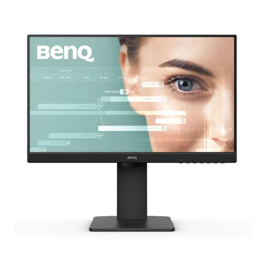
Monitor LED 24" Benq GW2485TC · FHD 75HZ 5MS · Hdmi/Usb-c/DpL 6,495En Sycom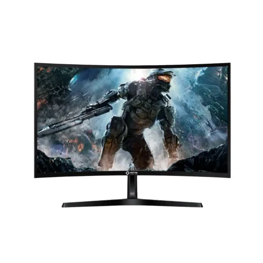
Monitor LED 27'' Curvo Gamer Vorttek VKG27C1QHD · QHD/2K 180Hz 1ms (2xHDMI/2xDP)L 6,495En Sycom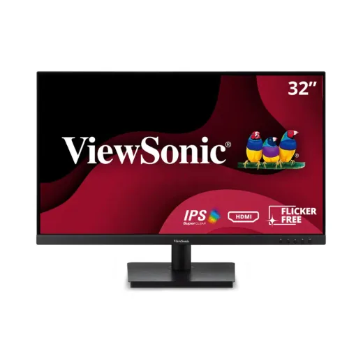
Monitor LED 32." ViewSonic VA3209M · FHD 75Hz 4ms · HDMI/VGAL 6,795.01En Sycom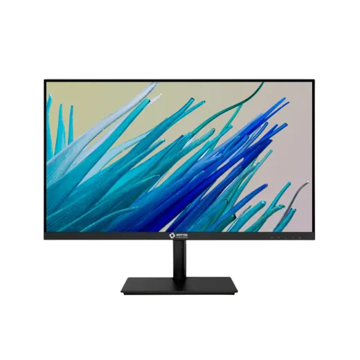
Monitor LED 24" Vorttek VK2475B · FHD IPS 100Hz 5ms · VGA/HDMIL 2,795.01En Sycom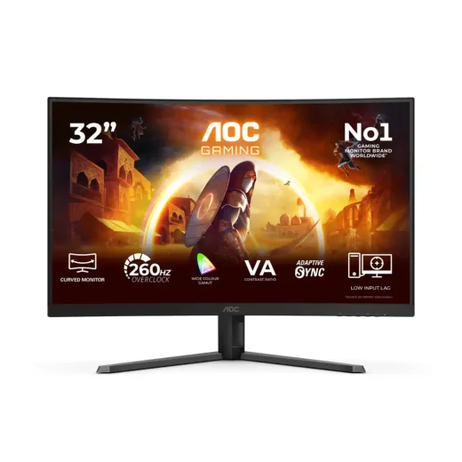
Monitor LED 32" Curvo Gamer AOC C32G42ZE · FHD 260Hz 0.3ms · HDMI/DPL 8,795En Sycom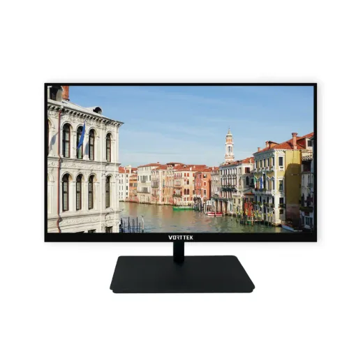
Monitor LED 22" Vorttek VK215F100 · FHD 100Hz 14ms · VGA/HDMIL 2,395En Sycom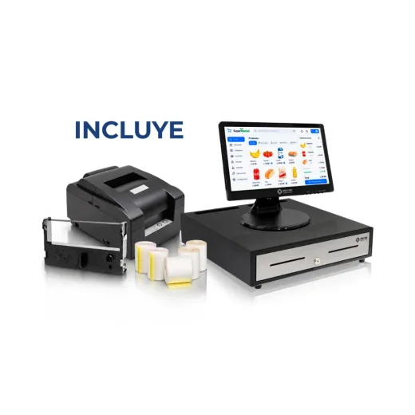
Monitor LED 15.6'' Touchscreen Vorttek Enduratouch 1920x1080 HDMI/USB + Cajon de Dinero + Impresora POS Matricial + Cinta + PapelL 11,500En Sycom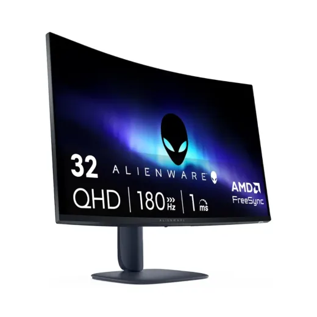
Monitor LED 31.5" Curvo Alienware AW3225DM · 2K 180Hz 1ms 2XHDMI/DP 0WRPPML 12,995En Sycom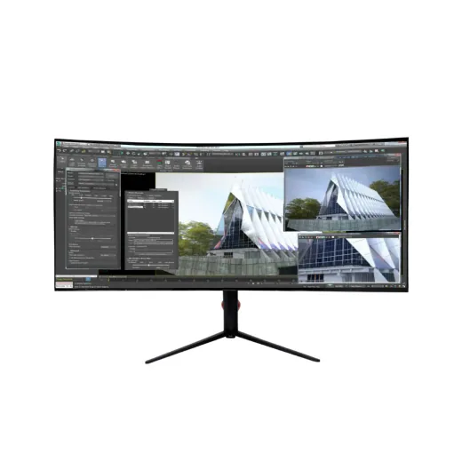
Monitor LED 40" Curvo Vorttek VK400GC · 5K IPS UltraWide 120Hz 1ms (DP/HDMI/USB-C)L 17,995En Sycom
Preguntas frecuentes
¿Dónde están más baratos los monitores LED en Honduras?
Revisa cada producto: mostramos el precio en cada tienda.